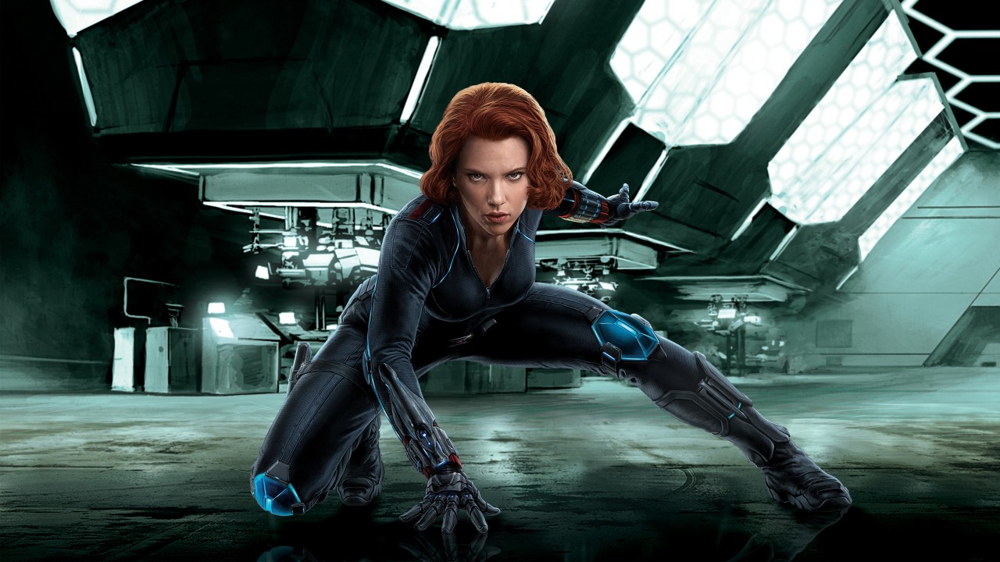

BLACK WIDOW
|  |
Natasha Romanoff, known by many aliases, is an expert spy, athlete, and assassin. Trained at a young age by the KGB's infamous Red Room Academy, the Black Widow was formerly an enemy to the Avengers. She later became their ally after breaking out of the U.S.S.R.'s grasp, and also serves as a top S.H.I.E.L.D. agent. The Black Widow has been enhanced by biotechnology that makes her body resistant to aging and disease and heals at an above human rate;[66] as well as psychological conditioning that suppresses her memory of true events as opposed to implanted ones of the past without the aid of specially designed system suppressant drugs. She can coordinate her body with balance, flexibility, and dexterity easily. |